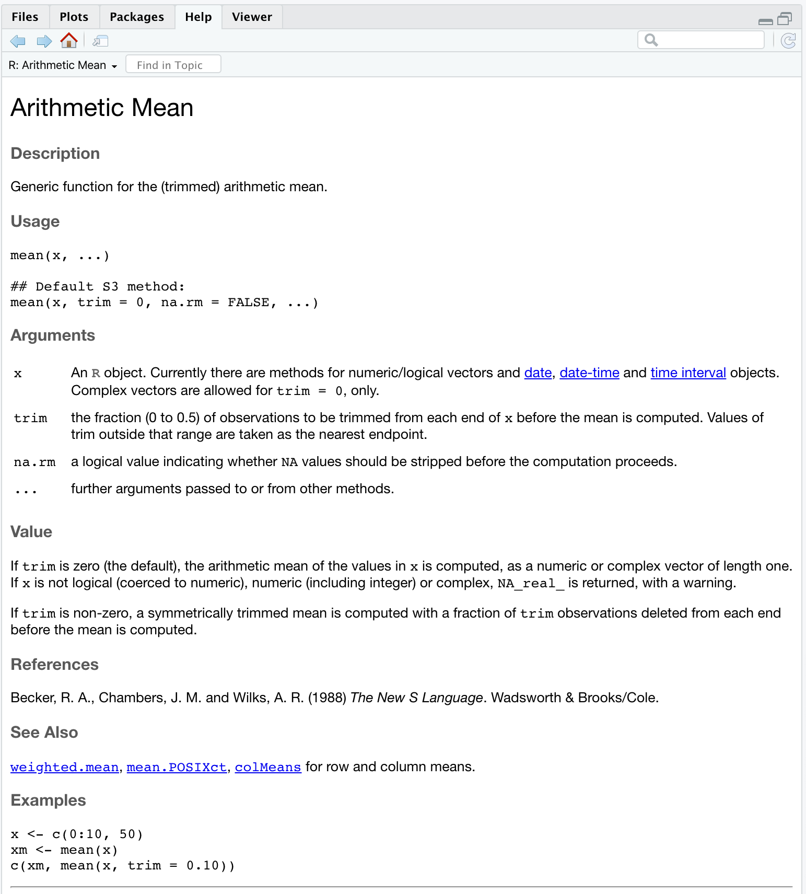

Module 11 Calling functions
Learning goals
- Understand what functions are, and why they are awesome.
- Understand how functions work.
- Understand how to read function documentation.
Instructor tip!
Here is some teacher content.
Introducing R functions
You have already worked with many R functions; commands like getwd(), length(), and unique() are all functions. You know a command is a function because it has parentheses, (), attached at its end.
Just as variables are convenient names used for calling objects such as vectors or dataframes, functions are convenient names for calling processes or actions. An R function is just a batch of code that performs a certain action.
Variables represent data, while functions represent code.
Most functions have three key components: (1) one or more inputs, (2) a process that is applied to those inputs, and (3) an output of the result. When you call a function in R, you are saying, “Hey R, take this information, do something to it, and return the result to me.” You supply the function with the inputs, and the function takes care of the rest.
Take the function mean(), for example. mean() finds the arithmetic mean (i.e., the average) of a set of values.
[1] 4.625In this command, you are feeding the function mean() with the input x.
Base functions in R
There are hundreds of functions already built-in to R. These functions are called “base functions”. Throughout these modules, we have been – and will continue – introducing you to the most commonly used base functions.
You can access other functions through bundles of external code known as packages, which we explain in an upcoming module.
You can also write your own functions (and you will!). We provide an entire module on how to do this.
Note that not all functions require an input. The function getwd(), for example, does not need anything in its parentheses to find and return current your working directory.
Saving function output
You will almost always want to save the result of a function in a new variable. Otherwise the function just prints its result to the Console and R forgets about it.
You can store a function result the same way you store any value:
[1] 4.625Functions with multiple inputs
Note that mean() accepts a second input that is called na.rm. This is short for NA.remove. When this is set to TRUE, R will remove broken or missing values from the vector before calculating the mean.
[1] 4.428571If you tried to run these commands with na.rm set to FALSE, R would throw an error and give up.
Note that you provided the function mean() with two inputs, x and na.rm, and that you separated each input with a comma. This is how you pass multiple inputs to a function.
Function defaults
Note that many functions have default values for their inputs. If you do not specify the input’s value yourself, R will assume you just want to use the default. In the case of mean(), the default value for na.rm is FALSE. This means that the following code would throw an error …
[1] NABecause R will assume you are using the default value for na.rm, which is FALSE, which means you do not want to remove missing values before trying to calculate the mean.
Function documentation (i.e., getting help)
Functions are designed to accept only a certain number of inputs with only certain names. To figure out what a function expects in terms of inputs, and what you can expect in terms of output, you can call up the function’s help page:
When you enter this command, the help documentation for mean() will appear in the bottom right pane of your RStudio window:

Learning how to read this documentation is essential to becoming competent in using R.
Be warned: not all documentation is easy to understand! You will come to really resent poorly written documentation and really appreciate well-written documentation; the few extra minutes taken by the function’s author to write good documentation saves users around the world hours of frustration and confusion.
The
TitleandDescriptionhelp you understand what this function does.The
Usagesection shows you how type out the function.The
Argumentssection lists out each possible argument (which inRlingo is another word for input or parameter), explains what that input is asking for, and details any formatting requirements.The
Valuesection describes what the function returns as output.At the bottom of the help page, example code is provided to show you how the function works. You can copy and paste this code into your own script of Console and check out the results.
Note that more complex functions may also include a Details section in their documentation, which gives more explanation about what the function does, what kinds of inputs it requires, and what it returns.
Function examples
R comes with a set of base functions for descriptive statistics, which provide good examples of how functions work and why they are valuable.
We can use the same vector as the input for all of these functions:
mean() has been explained above.
[1] 4.210526median() returns the median value in the supplied vector:
[1] 3sd() returns the standard deviation of the supplied vector:
[1] 2.594416summary() returns a vector that describes several aspects of the vector’s distribution:
Min. 1st Qu. Median Mean 3rd Qu. Max. NA's
0.000 2.500 3.000 4.211 6.000 9.000 1 Review assignment
NOTE: Under construction!
Other Resources
NOTE: Under construction!